有关化妆品包材材料知识
在化妆品OEM过程中，与客户的沟通过程中，客户对于化妆品的包材都不是很了解，特地将相关的知识整理如下：
一、玻璃（膏霜瓶，精华液，爽肤水，精油瓶）
玻璃瓶用于化妆品上主要分为：护肤品（膏霜、乳液）、香水、精油、指甲油几大类容量较小，大于200ml容量很少用于化妆品上。玻璃瓶又分为广口瓶、窄口瓶，固体状膏体一般用广口瓶，宜配电化铝盖或塑料盖子，瓶盖可作色彩喷油等效果；乳化液或水剂类膏体一般用窄口瓶，宜配用泵头,如配盖子需配内塞，水剂配小孔同内塞，较稠乳液则配大孔内塞。
玻璃瓶的厚薄不均会易导致损坏，或在严寒的条件下易被内容物挤破，应在灌装时测试合理容量，在运输上应用纸抱并单个隔开，在产品上应配有彩盒，内托和中盒更能取到防振作用。
玻璃瓶常用的瓶形通常有存货，如精油瓶，普通透明或磨砂瓶。玻璃瓶的制作周期较长，快则需要20天，有的供货期要45天，一般订购量为5千至1万，瓶型越小要做的量越大，周期与起订量都会受到旺季、淡季的影响。开模具费用：手工模在2500元左右，自动模具一般在4000元左右一个，1出4或1出8则要16000元—32000元左右，具体视厂家条件而定。精油瓶通常用的是茶色或有色及有色磨砂，可避光，盖子带有保险圈，可配内塞或滴管，香水瓶一般配精致的喷雾泵头或塑盖。
组合形式：
1、 膏霜瓶系列：玻璃瓶身+双层塑料外盖（一般容量在10g-50g）
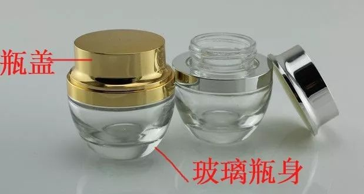
2、 精华液系列：玻璃瓶身+塑料泵头或电化铝泵头(容量相对比较高在20到100ml)
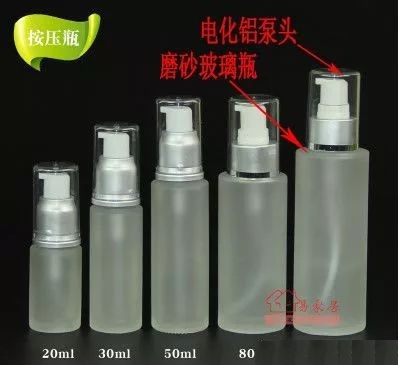
3、 爽肤水系列：玻璃瓶身+塑料内塞+外盖（100ml以上，也可以配有泵头的那种）
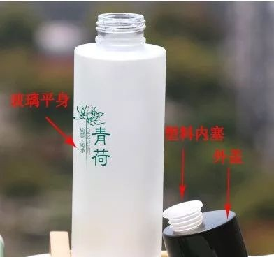
4、 精油瓶系列：玻璃瓶身+内塞+大头盖或胶滴头+滴管+电化铝盖
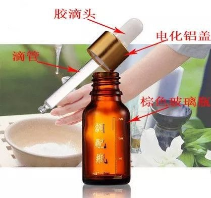
制作工艺：
瓶身：透明瓶，磨砂瓶有色瓶《白瓷瓶、精油瓶》（不常用色但订量高，专业线偏少采用），喷涂
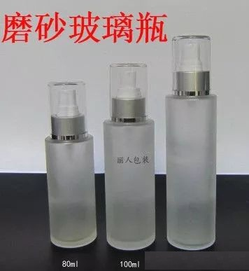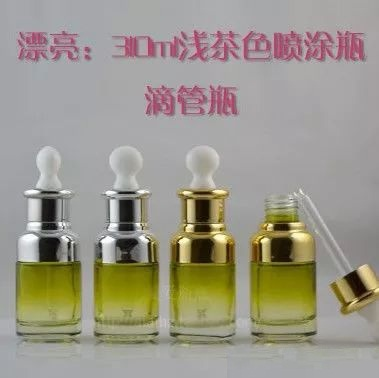
喷涂的效果一般要另加0.5元—1.1元/个，视面积及调色难度而定，丝印为0.1元/色，圆柱形瓶可作单色计算，异形瓶按双色或多色计算。
印刷：丝印，烫金，（丝印和烫金次数一共最好不要超过2次，套色太多，次品高，成本也高）
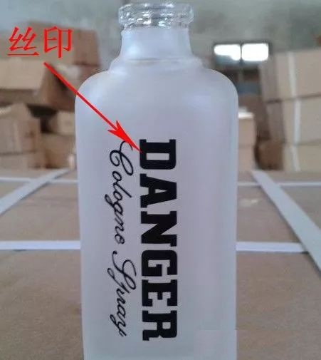
丝印：玻璃瓶丝印通常有两种，一种是高温油墨丝印，其特点是不易脱色，色泽较沉哑，紫色调色较难出效果，另一种是低温油墨丝印，色泽较艳，对油墨的要求较高，否则易脱落，且在瓶子消毒方面要注意。烫金烫银0.4元/款。
二、软管
1、软管分为单层、双层、五层软管，分别在防压、防渗透和手感方面均有区别，如五层管由外层、内层、两个粘合层，另有阻隔层。特点：具有极好的气体阻隔性能，能有效防止氧气和异味气体的渗入，同时防止内容物香味及有效成份的渗出。
2、双层管较为常用，属中低档的也可用单层，软管口径为13#—60#多种口径，当选定某种口径的软管时，以不同的长度标示不同的容量特征，容量3ml—360ml可任调，为了美观协调，60ml以下常用35#以下的口径，100ml、150ml通常用35#—45#口径，150ml以上容量则需用45#以上口径。
3、工艺上分为圆形管、椭圆管、扁形管、超扁管。扁形管、超扁管较其它管工艺复杂些，也是近几年出的新型管，所以价格相应较贵。
4、软管盖形状多样，一般分为平头盖，圆头盖，高盖，掀盖，超扁盖，双层盖，球形盖，唇膏盖，塑盖同样可以多种工艺上的处理，烫金边，银边，有色盖、透明、喷油，电镀等，尖嘴盖及唇膏盖通常配有内塞。软管盖为注塑品，软管为拉管，大部分软管厂家自身不生产软管盖。
5、有的产品需灌装后才封尾，封尾大至分为：直纹封尾、斜纹封尾、伞型封尾、星点封尾、异型封尾，封尾时可以要求在封尾处打印出所需的日期码。
6、软管可做有色管、透明管、有色或透明磨砂、珠光管，且有哑光与亮光之分，哑光看似高雅但易脏，有色管与管身大面积印刷的区别，可从尾部的切口处判断，切口处为白色的为大面积印刷管，用的油墨要求高，否则易脱落且受折后会开裂和露出白痕。
7、软管生产周期一般为15天—20天的周期（从确认样管开始计）订量单品为5千—1万，规模大的厂家通常以1万为起订量，极少小厂家若品种多，单品来计3千起订量也可以，很少有客户自行开模具的，绝大部分是公模（少许特色的盖子是私模）合同订量与实际供货数量，此行业中有±10%的偏差。
8、软管质量和厂家不同有价格上存在较大的差异，制版费通常以色200元—300元的价格，管身可进行多色印刷和丝印，个别厂家有热转印设备和技术。烫金、烫银以面积单价来计算，丝印效果较好，费用贵些且厂家较少，应根据不同层次需求选择不同的厂家。
9、组合形式：
软管+外盖 /软管常采用PE塑料。按产品厚度分为单层管（多采用，成本较低）、双层管（密封性能好）。按产品形状分为圆软管（多采用，成本较低）、扁软管又称为异形管（要二次接头，成本高些）。软管常配的外盖有旋盖（单层和双层之分，双层的外盖多为电镀盖以增加产品档次，看上去比较美观，专业线多采用旋盖）、掀盖。
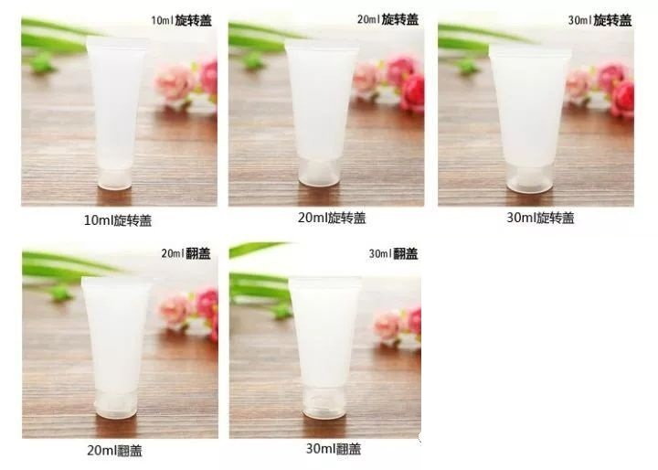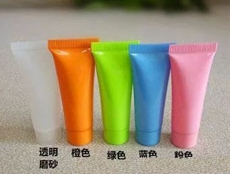
B、制作工艺：
瓶身：直接生产塑料产品加色，有色多用，也有做透明的，比较少用。
印刷：丝印（用专色，色块小而少的，和塑料瓶印刷方式一样，需套色，专业线产品常用）和胶印（类似象纸品印刷一样，色块大而色多的，日化线产品常用。）之分，还有烫金和烫银。
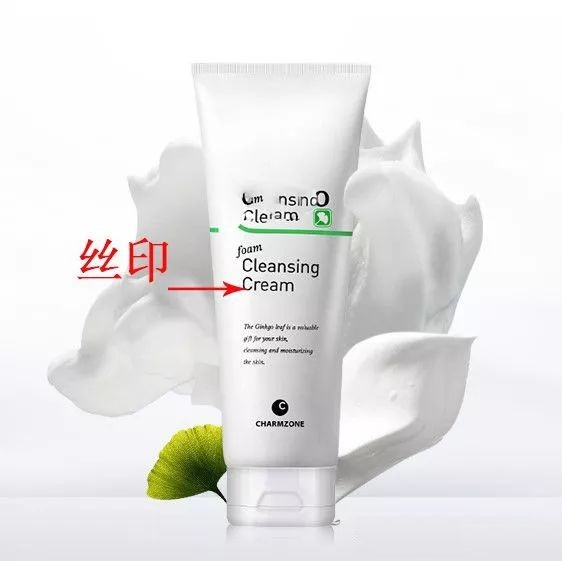
三、塑料瓶
1、塑料瓶的材质通常为PP，PE、K料、AS、ABS、压克力、PET等。
2、通常用于化妆品类容器壁较厚的膏霜瓶、瓶盖、瓶塞、垫片、泵头、防尘罩为注塑成型；PET吹瓶为两步成型、管胚为注塑，成品包装为吹瓶。其它如容器壁较薄的乳液瓶、洗涤瓶为吹瓶。
3、 PET材料为环保材料，具有高阻隔性，质轻、不碎特性、耐化学反抗性，透明性极强，可做成珠光、有色、磁白、透明，在装啫喱水方面应用广泛。瓶口一般为标准的16#、18#、22#、24#口径，可配上泵头使用。
4、压克力材质为注塑瓶，抗化学性较差，一般不能直接装膏体，需配内胆阻隔，灌装不易太满，防止膏体进入到内胆与压克力瓶之间，以免发生龟裂，运输当中包装要求较高，因划伤后看上去特别明显，通透性高，感观上壁特厚，但价格相当贵。
5、 AS、ABS：AS透明度较好于ABS，且韧性较好。
6、模具开发费用：吹瓶模具为1500元—4000元，注塑模具为8000元—20000元不等，模具用不锈钢的材料比用合金材料的要贵，但耐用，模具一次出几个，看生产量的需求，如生产量较大，可选择一出四或一出六的模具，客户可自行决定。
7、订购量一般为3千—1万个，可自定颜色，通常做原色磨砂和磁白色为主，或加珠光粉效果，瓶与盖虽配的同一色母，但有时由于瓶与盖用的材质不一样，表现出来的颜色有些差异。
8、丝印有普通油墨和UV油墨，UV油墨效果较好，有光泽和立体感，在生产时应先打版确认颜色，在不同材质的丝印效果会有所不同。
9、烫金，烫银等加工工艺与印金粉，银粉效果上有区别，硬的材质和光滑的表面较适宜烫金、烫银，软质的表面烫印效果不好，易脱落，烫金银的光泽度好于印金印银。
10、瓶盖一般配有内垫片，拉盖、内塞，极少数配有小勺或滴管，这主要是考虑其密封性和使用的方便性。
11、生产周期较为适中，约为15天周期，丝印圆柱形瓶作单色计算，扁瓶或异形瓶按双色或多色计算，通常要收取第一次的丝印网版费或夹具费，丝印单价一般为0.08元/色次至0.1元/色次，网版100元—200元/款，夹具约50元/个。
（1）、膏霜瓶+外盖（生产机器：注塑机）
注塑膏霜瓶体常采用的PP、PETG材料（新型材料，透明度也好，不用加内胆，不过也有双层，为节约成本），亚克力（此产品透明度好，一般要加内胆，不能直接膏体，瓶体会裂开）、ABS料（此材料的品种用于电镀配件，易着色），盖子多用PP料，内盖PP+外盖亚克力或电镀外盖或电化铝外盖或喷油盖
制作工艺：
瓶身：PP和ABS料瓶体用实色多，PETG材料和亚克力瓶多用透明色，有剔透感，亚克力瓶壁多用喷色，可折射出光，效果好。
印刷：瓶身可丝印和烫金、烫银。双层盖的内盖可丝印，外盖用透明的可透出效果。外盖用电化铝可击凸logo。
（2）、真空瓶+泵头外罩（精华液瓶、爽肤水瓶、乳液瓶），注塑真空瓶体常用AS料，可直接接触膏体，无吸管，真空设计）+泵头（电镀）外罩（透明和实色）
制作工艺：真空瓶体透明色多用，实色少用。
印刷：瓶身可丝印和烫金、烫银。
（3）、吹瓶
（精华瓶或乳液瓶，爽肤水瓶）（生产机器：吹塑机）
A、了解吹瓶工艺
按塑料材料可分PE吹瓶（较软用实色多，一次成形）、PP吹瓶（较硬用实色多，一次成形）、PET吹瓶（透亮度好，爽肤水和发品者厘多用，属环保材料，两次成形）、PETG吹瓶（透亮度比PET还要好，但国内不常用，成本高，费品高，一次成形，不可回收料）少。
组合形式：吹瓶+内塞（PP和PE料常用）+外盖（PP和ABS和亚克力常用，也有电镀，和电化铝，喷油爽肤水多采用）或泵头外罩（精华液及乳液常采用），+千秋盖+掀盖 （掀盖和千秋盖多为大流通日化线采用）。
B、吹瓶制作工艺：
瓶身：PP和PE料瓶体用实色多，PETG、PET、PVC材料多用透明色，或有色透明度，有剔透感，用实色比较少。PET材料瓶体也用可用喷色。
印刷：丝印和烫金、烫银。
（4）、泵头
1、分配器分为扎口式与螺口式两种，从功能来讲又分为喷雾，粉底霜、乳液泵、气雾阀门，真空瓶
2、泵头大小以相配瓶身的口径来定，喷雾的规格12.5mm—24mm，出水量为0.1ml/次—0.2ml/次，一般用于香水、啫喱水等产品包装上配用，口径相同接管的长短可根据瓶身的高度来定。
3、乳液泵规格范围较大16ml至38ml，出水量为0.28ml/次—3.1ml/次，一般用于膏霜类和洗涤类产品。
4、真空瓶通常为圆柱形，规格15ml—50ml,个别有100ml，整体容量较小，靠的是大气压的原理，可避免化妆品在使用过程中造成污染，真空瓶有电化铝、塑料电镀及有色塑料，价格比其它普容器要贵，普通订量要求不高。
5、多用PP材料，（生产机器：注塑机）外圈也用电化铝套，也用电镀工艺。也可烫金烫银。
（1）、按瓶体功能来分：
A、真空瓶的泵头，不用吸管，+外罩
B、普通瓶的泵头，需要吸管。+外罩或不加外罩。
（2）、按泵头的功能分
A、乳液泵头（适合乳液状的内容物，例如乳液，沐浴露，洗发露）
B、喷雾泵头（适合水性状的内容物，例如喷雾，爽肤水）
3、按外型来分
A、有罩泵头，外罩起保护作用。（偏用于容量比较小的产品）100ml以内。
B、无罩泵头，有特殊设计，可锁住，不会因挤压流出内容物，起保护作用，便于携带。降低成本。（偏用容量比较的产品。）100ml以上，日化线的沐浴露和洗发水的泵头设计多是没有外罩的。
4、按制作工艺有
A、电镀泵头
B、电化铝泵头
C、塑料泵头
（5）、外盖
多用PP材料，也有PS，ABC料和亚克力料。（生产机器：注塑机，按结构来分双层盖：
A、PP内盖+PS和亚克力料外盖
B、PP内盖+外盖PP、ABS料电镀
C、PP内盖+电化铝外盖
D、PP内盖+PP或ABS喷油外盖
单层盖：PP料常用
工艺：盖边都可烫金或银，喷油
双层盖的内盖可丝印logo，外盖用透明的可透出效果。外盖用电化铝可击凸logo。
大家看到上面的内容也许已经蒙了，但是大家不用知道的那么专业，一般的化妆品OEM厂家都有专业的人员来给您解说。都是材料不一样，主要知道这些的区别：
PET：PET透明度高，瓶身有软度，能捏凹但比PP硬些。
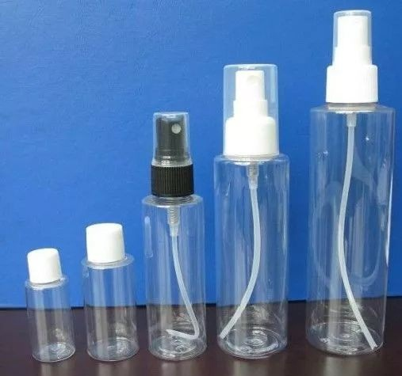
PP:PP瓶比PET要软些，更容易捏，透明度比PET差，所以一些不透明的洗发水瓶比较常用（挤起来方便）。
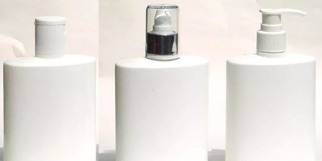
PE:瓶身基本不透明，也没PET这么光滑。
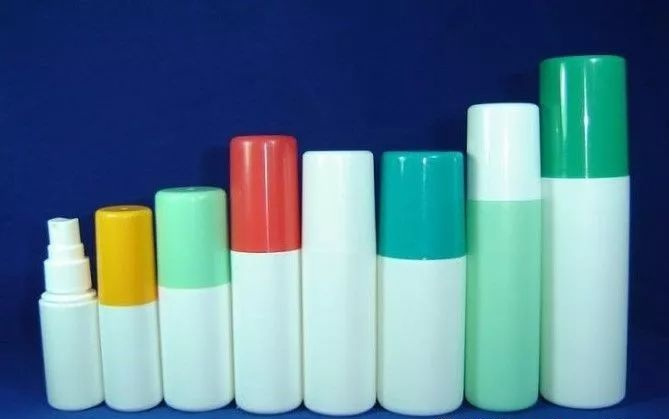
Acrylics亚克:又厚又硬，最像玻璃的就是亚克力。
 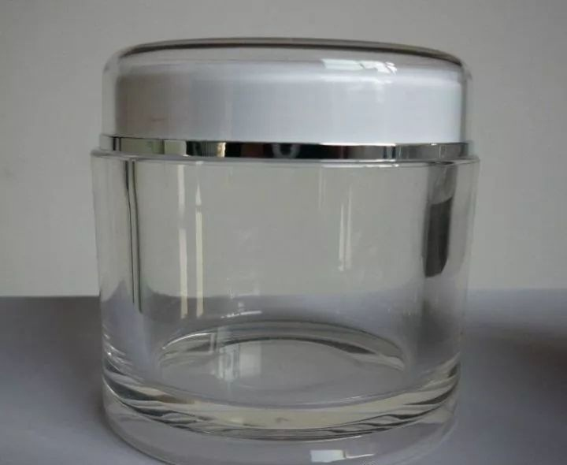
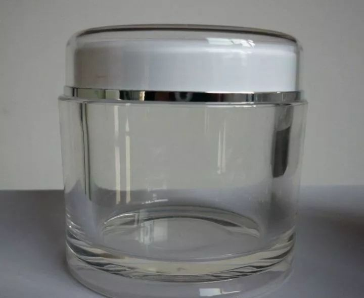
发布于 2019-09-05